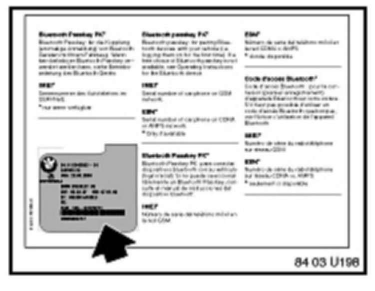

Cell Phone - Bluetooth(R) is Inoperative
SI B 84 09 06Communication Systems
July 2010
Technical Service
This Service Information bulletin supersedes SI B84 09 06 dated October 2007.
[NEW] designates changes to this revision
SUBJECT
Bluetooth(R) Inoperative, TCU FC # A379 or 79
MODEL
E46 (3 Series) with Premium Package (ZPP) or BMW Assist (SA 639) from 9/04 production (325i/iA from 10/04 production)
E53 (X5) with Premium Package (ZPP) or BMW Assist (SA 639) from 10/04 production
E60, E61 (5 Series) from 9/04 production
E63, E64 (6 Series) from 9/04 production
E65, E66 (7 Series) from 3/05 production
E70 (X5) with Premium Package (ZPP) or BMW Assist (SA639)
E83 (X3) with Premium Package (ZPP) or BMW Assist (SA639) from 9/04 production
E85, E86 (Z4) with Premium Package (ZPP) or BMW Assist (SA639) from 10/04 production
E90, E91, E92, E93 (3 Series) with Premium Package (ZPP) or BMW Assist (SA639)
SITUATION
An approved Bluetooth�-enabled handset does not connect/bond to the vehicle.
The Telematics Control Unit (TCU) has one of the following fault codes stored in the fault memory:
^ A379 (Error in Bluetooth-Interface)
^ 79 (Error in Bluetooth-Interface)
CAUSE
Conflict between handset and TCU
COMPATIBLE HANDSET INFORMATION
Before the complaint can be addressed, the particular handset must be verified for compatibility. On vehicles equipped with BMW Assist with Bluetooth� wireless technology, confirm whether or not the phone is compatible. Visit the website for a list of handsets that have passed BMW testing for compatibility. Note the following disclaimer on this website:
^ "This list is provided for reference only. The mobile phones listed here have passed compatibility tests as of the date of testing and meet or exceed minimum standards established by BMW. The list is not a warranty for phone performance or functionality. BMW makes no guarantees or warrantees as to the performance of each phone while connected to your BMW via Bluetooth Wireless Technology. Furthermore, software releases by BMW, the phone supplier or the wireless carrier dated after testing might alter compatibly results. While many phones are offered with Bluetooth Wireless Technology, not all phones support the necessary profiles to work with your BMW. BMW does not guarantee availability or functionality with all wireless carriers. Functions such as synchronizing the address book and transferring a call into or out of the vehicle may function differently from phone to phone".
PROCEDURE
On an I/K-bus vehicle (e.g., E46, E53, E83, E85, etc.):
1. Verify the customer's complaint.
2. Perform a short test with BMW diagnostic tools, using DIS software V51 or higher.
3. Perform test module B8400_00123 for the Bluetooth antenna. Does the Bluetooth antenna circuit pass the test module?
^ If no, diagnose and repair the Bluetooth antenna circuit. Then retest the system for the customer's complaint.
^ If yes, proceed to step 4.
4. Delete the paired devices from the handset.
5. Delete the paired devices from the TCU.
^ Select "Control Unit functions".
^ Select the "TCU".
^ Select "keypad handset Bluetooth mobile".
^ Select "number of Bluetooth devices" and press "Display".
^ The number of paired devices will be displayed (this is the total number of devices that have been previously paired to the vehicle).
^ Select "Delete list of Bluetooth devices" and press "Activate".
^ Select "number of Bluetooth devices" and press "Display" (this should now display "0").
^ Turn the ignition off for two minutes.
6. Pair a (reference) compatible handset known to work to the vehicle, following the procedure outlined in SI B84 13 04 (BMW Assist with Integrated Bluetooth).
^ If the known (reference) handset does NOT pair to the vehicle, proceed to step 8.
^ If the handset pairs to the vehicle, allow the phone book to complete downloading.
7. Place a phone call using the vehicle controls. Does the system operative correctly?
^ If yes, pair the customer's compatible handset and retest the system for the customer's complaint.
^ If no, continue normal diagnosis. This Service Information bulletin is not relevant to the customer's complaint.
8. Does the TCU have fault code # 79 (Error in Bluetooth-Interface) stored in the fault memory?
^ If no, continue normal diagnosis. This Service Information bulletin is not relevant to the customer's complaint.
^ If yes, check the fault frequency and note down the number of times the error occurred. Work through the test module as outlined in steps 9, 10, and 11.
9. Clear the fault and reference the information below about fault code 79.
^ Fault code 79 is an erroneous fault unless it is currently present.
^ The fault is only relevant if it has occurred more than 15 times.
10. After deleting the fault, try to pair the customer's handset to the vehicle.
^ If the handset does not pair to the vehicle, proceed to step 11.
^ If the handset pairs correctly to the vehicle and the system operates correctly, release the vehicle back to the customer.
11. Pair a (reference) compatible handset known to work with the vehicle following the procedure outlined in SI B84 13 04 (BMW Assist with Integrated Bluetooth).
^ If the known (reference) handset does NOT pair to the vehicle, proceed to step 12.
^ If the handset pairs to the vehicle, allow the phone book to complete downloading.
12. Place a phone call using the vehicle controls. Does the system operative correctly?
^ If yes, pair the customer's compatible handset and retest the system.
^ If no, continue normal diagnosis. This Service Information bulletin is not relevant to the customer's complaint.
13. If the handset still does not pair to the vehicle, the TCU is defective. Refer to the "TCU REPLACEMENT PROCEDURE" section of this bulletin.
On a MOST-bus vehicle (e.g., E60, E63, E65, E70, E90, etc.):
1. Verify the customer's complaint.
2. Delete the paired devices following the "PROCEDURE - DELETING PAIRED DEVICES" section of this bulletin.
3. Turn the ignition off for four (4) minutes.
4. Pair a (reference) compatible handset known to work to the vehicle, following the procedure outlined in SI B84 13 04 (BMW Assist with Integrated Bluetooth).
If the known (reference) handset does NOT pair to the vehicle, proceed to step 6.
If the handset pairs to the vehicle, allow the phone book to complete downloading.
5. Place a phone call using the vehicle controls. Does the system operative correctly?
If yes, pair the customer's compatible handset to the vehicle. Then retest the system for the customer's complaint.
If no, continue normal diagnosis. This Service Information bulletin is not relevant for the customer's complaint.
6. Perform a short test with BMW diagnostic tools, using DIS software V51 or higher.
7. Perform test module B8400_00123 for the Bluetooth antenna. Does the Bluetooth antenna circuit pass the test module?
If no, diagnose and repair the Bluetooth antenna circuit. Then retest the system for the customer's complaint.
If yes, proceed to step 8.
8. Does the TCU have fault code # A379 (Error in Bluetooth-Interface) stored in the fault memory?
^ If no, continue normal diagnosis. This Service Information bulletin is not relevant to the customer's complaint.
^ If yes, check the fault frequency and note down the number of times the error occurred. Work through the test module as outlined in steps 9, 10 and 11.
9. Clear the fault and reference the below information about fault code 79.
^ Fault code A379 is an erroneous fault unless it is currently present.
^ The fault is only relevant if it has occurred more than 15 times.
10. After deleting the fault, try to pair the customer's handset to the vehicle again.
^ If the handset does not pair to the vehicle, proceed to step 11.
^ If the handset pairs correctly to the vehicle and the system operates correctly, release the vehicle back to the customer.
11. Pair a (reference) compatible handset known to work with the vehicle following the procedure outlined in SI B84 13 04 (BMW Assist with Integrated Bluetooth).
^ If the known (reference) handset does NOT pair to the vehicle, proceed to step 13.
^ If the handset pairs to the vehicle, allow the phone book to complete downloading. Proceed to step 12.
12. Place a phone call using the vehicle controls. Does the system operate correctly?
^ If yes, pair the customer's compatible handset and retest the system.
^ If no, continue normal diagnosis. This Service Information bulletin is not relevant to the customer's complaint.
13. If the handset still does not pair to the vehicle, the TCU is defective. Refer to the "TCU REPLACEMENT PROCEDURE" section of this bulletin.
PROCEDURE - DELETING PAIRED DEVICES
Deleting paired devices on MOST-bus vehicles with a CD/CID (e.g., E60, E63, E65, E70, E90, etc.)
1. Turn the key on.
2. Press the "Menu" button and ensure that the Central Information Display (CID) is set to the basic menu screen.
3. Press down briefly on the controller to enter the iMenu.
4. Scroll down to "Communication settings" and select.
5. Select "Bluetooth" and press the controller.
6. Select "Phone" and press the controller.
7. "Bluetooth connectable in this menu" is displayed, along with a list of previously paired devices.
8. One at a time, select each handset listed in the device list and press down on the controller. A pop-up menu will be displayed asking if you want to delete the device. Select "yes".
9. Turn the ignition off and wait for the MOST-bus to enter sleep mode (approximately 4 minutes).
10. Delete all Bluetooth devices from the handset's Bluetooth device list. Refer to the handset's owner's manual or the handset manufacturer's website for details on how to perform this procedure.
Deleting paired devices on MOST-bus vehicles with a RAD2 (e.g., E90, E91, E93)
1. Turn the key on.
2. Press the "MENU" button.
3. Turn the right knob to highlight "Phone".
4. Press the function button under "Phone".
5. "Searching for paired devices" is displayed.
6. Press the function button under "BT".
7. Using the right knob, select each device from the
previous paired device list and then press the function button under "DELETE".
8. Turn the ignition off and wait for the MOST-bus to enter sleep mode (approximately 4 minutes).
9. Delete all Bluetooth devices from the handset's Bluetooth device list. Refer to the handset's owner's manual or the handset manufacturer's website for details on how to perform this procedure.
TCU REPLACEMENT PROCEDURE
1. The route cause of the problem is under analysis; please refer to SI B84 23 05 (Enhanced Support for BMW Assist Telematics Control Unit (TCU) with Bluetooth & CPT9000 Phone Systems) prior to replacing the TCU.
2. Refer to TIS (RA 84 11...) for the TCU replacement procedure.
3. Before installing the new TCU, remove one copy of the Electronic Serial Number (ESN) label and place it on the repair order for reference during warranty claim entry. You will be asked for the new TCU "ESN" when submitting a claim via DCSnet. Refer to SI B01 10 05 for more details.

4. The second ESN label of the TCU should be affixed over the existing label in the Owner's Manual insert (P/N 01-49-0-157 963).
5. Complete the TCU installation.
6. Using Progman V27.01.00 or higher, program the complete vehicle. Refer to SI B09 05 01 "Coding, Individualization and Programming", Procedure A.
7. On E60, E61, E63, E64, E65 (from 3/05), E66 (from 3/05), E70, E90, E91, E92, and E93 vehicles: Initialize BMW Assist, following the procedure as outlined in the "INITIALIZATION OF BMW ASSIST SERVICES" section of this bulletin.
8. Test BMW Assist by following the procedure outline in the "TEST OF BMW ASSIST SERVICES" section of this bulletin.
INITIALIZATION OF BMW ASSIST SERVICES
1. The BMW Assist services initialization procedure must be completed per SI B84 15 03 for all vehicles.
^ The vehicle must be in the Verizon Wireless Network for the initialization procedure to work properly. If the vehicle is not in the Verizon Wireless Network, perform these additional steps.
^ Create a PuMA case to received TCU shipping authorization.
^ Remove the TCU from the vehicle.
^ Send the TCU, BMW Assist TCU Reactivation Form with the new MIN/MDN numbers, and a copy of the PuMA case via FedEx to:
[NEW] BMW of North America, LLC
Engineering Center - TeileClearing TCU
200 Chestnut Ridge Rd.
Woodcliff Lake NJ 07677
^ BMW of North America, LLC will initialize the TCU, and ship it out on the same business day it was received.
^ After receiving the TCU back from BMW of North America, reinstall the TCU and place a BMW Assist call, as outlined in the "Testing of BMW Assist services" section of this bulletin.
^ [NEW] All shipping charges (both ways) are to be billed to the dealer's FedEx account. On the warranty claim, submit the FedEx shipping charges (double the amount provided to you by TeileClearing TCU to cover shipment both ways) in the sublet section (using sublet code 4).
2. Test BMW Assist by performing the "TEST OF BMW ASSIST SERVICES" section of this bulletin.
TEST OF BMW ASSIST SERVICES
Test the BMW Assist service for proper operation by placing a test call (press the Roadside Assistance "Wrench" button). Make sure the BMW Assist Response Center has received the correct MIN/MDN/VIN and location of the vehicle. Have the representative update his or her records, as
needed.
^ If a TCU is replaced on a vehicle with an inactive BMW Assist account and a BMW Assist call is made, the call will be routed to an automated system until the TCU is deactivated.
^ For customers who would like to renew BMW Assist services, refer to SI B84 22 05 (Reactivation of BMW Assist Services).
If the connection is established but voice communication is not established, call BMW Assist Customer Care immediately, option # 4 to cancel the dispatch. Failing to call will result in local emergency services being dispatched to your location.
WARRANTY INFORMATION
Covered under the terms of the BMW New Vehicle Limited Warranty.